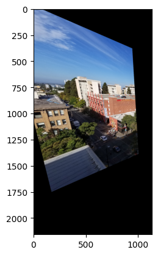
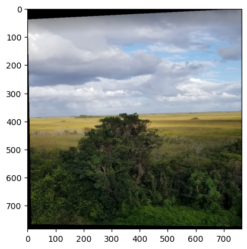

Overview
In this project, we focus on shooting our own images and finding correspondences in between them to a lot of interesting things. First, we warp images and calculate its rectification, which allows us to see images as if they were posted in front of us, rather than in perspective. Second, we can use this information to blend images together and form panoramic views. We continued this in 4B, when we attempted to automate how we got our correspondence points and filtered them to get just the right amount in the right places.
Part A: The Power of Diffusion Models!
Setup
Here are some pictures from the rooftop of an apartment.
A homography is a 3x3 matrix which represents a transformation between a pair of images. We can recover a homography by using pairs of corresponding points. The points on the pictures above represent the corresponding points. To implement this function, I went through each pair of points and created a system of equations to obtain the homography matrix’s coefficients, of which there will be 9 values. I then solved it with a least squares solver and reshaped it into a 3x3 matrix.
Part 1.1: Implementing the Forward Process
In this part, we aim to take a clean image and produce a noisy image by sampling from a Gaussian. To accomplish this, I first get the alpha bar by getting the correct alpha_cumprod value at its respective timestep. Then, I calculate a random epsilon value and use all this info in equation 2 to get the noisy image.
|
Equation 2
|
Noisy Campanile at various t-levels
|
Part 1.2: Classical Denoising
Now, we use Gaussian blur filtering to try to remove the noise with a kernel size of 5 and sigma of 1. This is primarily accomplished using torchvision.transforms.functional.gaussian_blur.
 Gaussian Blur Denoising at various t-levels
Gaussian Blur Denoising at various t-levels
|
Part 1.3: One Step Denoising
We use a pre-trained diffusion model to denoise, which is a UNet that’s been trained on a very large dataset. Using the UNet, we first estimate the noise in the noisy image. Then, we use the formula in equation 2 (as shown in 1.1) to create the clean image given the noisy image, using the noise estimate in the place of epsilon. This gives us a blurry image without the noise seen in 1.1, as well as providing a better output than 1.2.
|
One-Step Denoised Campanile at various t-levels
|
4: Iterative Denoising
In this part, instead of one-step denoising, we plan to denoise iteratively. We create a list of timesteps from 990 to 0, with intervals of 30. So at each denoising step, we use formula 3 to reduce the noise within the current iteration of the image. This is accomplished by calculating the alpha and beta values at the current and incoming timestep and running unet to get the noise estimate of the current image.
 Equation 3
Equation 3
|
 Noisy image every 5th loop of denoising
Noisy image every 5th loop of denoising
|
 Final Image for Iterative Denoising
Final Image for Iterative Denoising
|
|
Final Image for Single Denoising Step
|
 Final Image with Gaussian Blurring
Final Image with Gaussian Blurring
|
Part 1.
Part 1.5: Diffusion Model Sampling
I use torch.randn to make noise and then call the iterative_denoise from the last part to generate the image.
 Matching Points between both images
Matching Points between both images
|
Part 1.6: Classifier Free Guidance
To use this technique, we use a lot of code written for iterative denoising. The difference is we have conditional and unconditional prompt embeddings. The unconditional prompt embedding is just null and we calculate the Unet for both these values instead of just one before. Then, we pull the noise estimates for both the Unets and use the formula below with the pre-specified scaling factor. The rest is the same.
|

Result 1
|
 Result 2
Result 2
|

Result 3
|